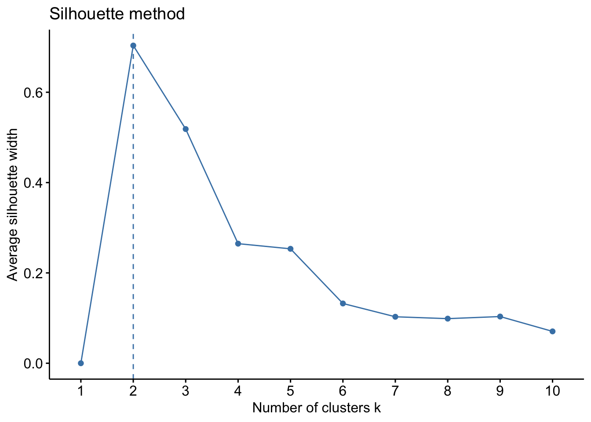

Clustering is a machine learning technique that helps us group similar data points together without knowing the group labels in advance. It’s like sorting objects based on their similarities rather than their names or categories. There are two main types of clustering:
Hard Clustering: In hard clustering, each data point is assigned to only one cluster. It’s like putting each object into a specific box or group based on its similarity to other objects in that group. The goal is to create distinct and non-overlapping clusters. Common examples of hard clustering include K-means, Hierarchical clustering, and DBSCAN.
Soft Clustering: In soft clustering, also known as fuzzy clustering, data points can belong to multiple clusters with different degrees of membership. It’s like assigning each object a score for how much it belongs to different groups. This allows for more flexibility in capturing complex relationships and overlapping patterns in the data. Common examples of hard clustering include Fuzzy C-means (FCM) and Gaussian Mixture Models (GMM)
Both types of clustering have their uses depending on the specific problem and data characteristics. They help us discover hidden patterns, understand the structure of the data, and gain insights that may not be apparent at first glance.
This blog post will guide you through the fundamental steps and important factors to consider when performing two common types of clustering: Hierarchical clustering and K-means clustering. You’ll learn how to apply these techniques to group similar data points and uncover patterns in your data.
Example dataset
The dataset used in this demonstration consists of ratings provided by 240 participants. These participants were randomly assigned to one of five conditions, each using a different scale to measure valence. The scales varied in the word pairs used to describe valence, such as unpleasant-pleasant, negative-positive, bad-good, dislike-like, and displeasing-pleasing.
Regardless of the assigned condition, each participant rated the valence of 27 different emotion words. The goal of this analysis is to explore how these 27 emotions cluster together based on the valence ratings, without taking the condition into account.
To better understand how emotions are related to each other based on valence ratings, we will use two different clustering techniques: k-means and hierarchical clustering. These methods will allow us to group similar emotions together and uncover any patterns or underlying dimensions of emotion within the dataset. By analyzing the clusters formed by these techniques, we can gain valuable insights into how different emotions are perceived and how they relate to one another in terms of their valence.
To prepare the dataset for clustering, we need to format it in a specific way.
Formatting the dataset: We will arrange the data so that each emotion is represented as a row and each participant as a column. This way, the clustering algorithm will group emotions based on their patterns of valence ratings across participants. If we reversed the order, the clusters would provide insights into different subgroups or profiles of participants based on their emotional responses.
library(dplyr)library(data.table)# Load original datadata <- data_original %>%# Select the relevant columnsselect(SubjID, emotion, rating) %>%# Move emotions to columns, and SubjID and condition as rowsdcast(emotion ~ SubjID, value.var ="rating")# Make emotion names the row namesrownames(data) <- data$emotion# Remove unnecessary columns data <- data[, !names(data) %in%c("SubjID", "emotion")]
Standardize variables (if not on same scale)
If your dataset contains variables that are not on the same scale, it is important to standardize them before performing clustering. Standardization ensures that each variable contributes equally to the clustering process, regardless of its original scale.
# Standardize the entire datasetdata <-scale(data)
Deal with missing data
Dealing with missing data is an important step in data preprocessing. Here are some common options for handling missing data:
This approach involves removing any observations or rows that have missing values. It is suitable when the missing data is minimal and randomly distributed across the dataset. In R, you can use the na.omit() function to remove rows with missing values:
# Remove missing datadata <-na.omit(data)
Missing values can be replaced with the mean, median, or mode of the corresponding variable. This method assumes that the missing values are missing at random and that the replacement values adequately represent the missing information. In R, you can use the mean(), median(), or Mode() function from appropriate packages to calculate the respective measures and then fill in the missing values.
# Calculate the mean of each columncolumn_means <-colMeans(data, na.rm =TRUE)# Replace missing values with the column meansdata_imputed <-ifelse(is.na(data), column_means[col(data)], data)
Multiple imputation is a technique where missing values are imputed multiple times based on the observed data distribution. Multiple complete datasets are created, and the analysis is performed on each dataset separately. The results are then combined to generate final estimates. The mice package in R provides functions for multiple imputation.
# Load the mice packagelibrary(mice)# Create the imputation modelimputation_model <-mice(data, m =5, method ="pmm")# Perform the imputationimputed_data <-complete(imputation_model)# Access the imputed datasetsimputed_datasets <- imputation_model$imp# Perform analysis on each imputed datasetfor (i in1:length(imputed_datasets)) { imputed_analysis <-lm(dependent_variable ~ independent_variable, data = imputed_datasets[[i]])# Perform further analysis or save the results}# Combine the results from multiple imputationscombined_results <-pool(imputation_model)
Hierarchical clustering
Hierarchical clustering is a process of merging similar clusters to create a hierarchy. Here’s how it works:
Start with each data point as a separate cluster.
Measure the similarity between clusters and merge the most similar ones.
Repeat step 2 until all data points belong to a single cluster.
The result is a dendrogram, showing the hierarchy of clusters.
To determine the number of clusters, choose a level on the dendrogram and cut horizontally.
By iteratively merging clusters, we can visualize how data points group together and decide how many clusters to obtain from the dendrogram.
1. Calculating the dissimilarity matrix
The next step in hierarchical clustering is to calculate the dissimilarity matrix. This matrix represents the distances between pairs of data points and plays a crucial role in determining how the clusters are formed. There are various distance metrics to choose from, each capturing different aspects of similarity or dissimilarity between data points.
To illustrate these distance metrics, let’s consider a simple example with two-dimensional data points:
This metric measures the straight-line distance between two data points in a multi-dimensional space. It considers the differences between each feature of the data points and calculates the overall distance. It is well-suited for datasets where the magnitude and scale of features matter.
Manhattan distance measures the sum of the absolute differences between corresponding features of two data points. It calculates the distance by moving horizontally and vertically along the axes, as if navigating through city blocks. It is suitable for datasets where only the differences between features matter, regardless of their magnitude.
Once you have determined which distance metric is appropriate for your data, you can calculate the dissimilarity matrix. The dissimilarity matrix represents the pairwise distances or similarities between data points and is a fundamental component of clustering algorithms. In this case, we will use the dissimilarity matrix to capture the similarities or differences in valence ratings between the 27 emotion words.
Here’s how you can calculate the dissimilarity matrix using either Euclidean or Manhattan distance and visualize it as a heatmap:
# calculate dissimilarity matrixdistance_matrix_euclidean <-dist(data, method ="euclidean")# Convert the distance matrix to a square matrixdistance_matrix_euclidean_plot <-as.matrix(distance_matrix_euclidean)# Plot a heatmap of the distance matrixheatmap(distance_matrix_euclidean_plot, main ="Euclidean Distance Matrix Heatmap",col =heat.colors(256))
# calculate dissimilarity matrixdistance_matrix_manhattan <-dist(data, method ="manhattan")# Convert the distance matrix to a square matrixdistance_matrix_manhattan_plot <-as.matrix(distance_matrix_manhattan)# Plot a heatmap of the distance matrixheatmap(distance_matrix_manhattan_plot, main ="Manhattan Distance Matrix Heatmap",col =heat.colors(256))
2. Determining the linkage type
In hierarchical clustering, the choice of linkage method determines how the distance between clusters is calculated when constructing the hierarchical structure. Different linkage methods can lead to different cluster structures. Here are some commonly used linkage methods in hierarchical clustering:
In single linkage, the distance between two clusters is defined as the minimum distance between any two points in the two clusters. This method tends to form elongated, chain-like clusters and is sensitive to noise and outliers.
In complete linkage, the distance between two clusters is calculated as the maximum distance between any two points in the two clusters. It is less sensitive to outliers compared to single linkage, meaning that outliers have less influence on the clustering results. Complete linkage is a good choice when dealing with data that contains outliers or when the desire is to form well-separated and distinct clusters. However, it may struggle with identifying clusters that have varying sizes or shapes.
In average linkage, the distance between two clusters is calculated as the average distance between all pairs of points in the two clusters. This method aims to strike a balance between the extreme approaches of single and complete linkage. By considering the average distance, it takes into account the overall similarity between clusters without being overly influenced by individual points. It is a popular choice when the dataset contains diverse cluster shapes and sizes, as it can capture both local and global similarities. However, it may still be sensitive to outliers to some extent.
Ward’s method is a linkage method in hierarchical clustering that focuses on minimizing the within-cluster variance. It calculates the distance between two clusters by considering the increase in the total within-cluster sum of squares when merging them. The idea is to merge clusters in a way that results in the smallest increase in variance within each cluster. In the visualization below, you can see that the first one (two clusters merged together) has high variance, whereas the second option is better.
In centroid linkage, the distance between two clusters is defined as the Euclidean distance between their centroids (mean vectors). This method is based on the idea that clusters with closer centroids are more similar.
3. Running hierarchical cluster analysis
Reiterating the information above, for the purposes of this tutorial, we will use the Euclidean distance metric and Ward’s method for linkage in our cluster analysis. We can perform the analysis and visualize the results using the following code:
hclust_avg <-hclust(distance_matrix_euclidean, method ='ward.D2')plot(hclust_avg, cex =0.6, hang =-1)
The dendrogram visually shows how emotion words are grouped based on their valence ratings. It helps us determine the number of clusters by choosing a horizontal cut. Lower cuts indicate more similar clusters, while higher cuts represent more dissimilar clusters. The dendrogram suggests the presence of two distinct clusters within the data, indicated by the long vertical lines. This indicates that there are two groups of emotion words that exhibit similar patterns of valence ratings.
4. Visualization
We can also visualize the two clusters in two different colors, using the code below:
K-means clustering is a method that helps us group similar data points together by repeatedly updating cluster centers. Here’s how it works:
Start by randomly choosing some points as the initial cluster centers.
Calculate the distance between each data point and the cluster centers.
Assign each data point to the nearest cluster center based on distance.
Recalculate the cluster centers by taking the average of all the data points assigned to each cluster.
Repeat steps 2 to 4 until the cluster assignments and centers stop changing significantly.
At the end, each data point belongs to a specific cluster, and the cluster centers represent the average positions of the clusters.
K-means clustering helps us find groups of similar data points based on their distances from the cluster centers. It’s a useful technique for discovering patterns and organizing data into meaningful clusters.
1. Determining the optimal number of clusters
Determining the optimal number of clusters is an important step in k-means clustering. It helps us find the right balance between capturing meaningful patterns and avoiding overfitting. Here are a few methods commonly used to determine the optimal number of clusters:
The elbow method helps us find the optimal number of clusters in a dataset. We plot the number of clusters (k) against a measure of clustering quality, such as the within-cluster sum of squares (WSS). The plot resembles an arm, and we look for the “elbow” point where the plot starts to flatten out. This indicates the optimal number of clusters.
The interpretation is simple: choose the value of k at the elbow point. It captures the most meaningful information without adding unnecessary complexity. The elbow point represents a balance between capturing patterns and avoiding overfitting. So, the optimal number of clusters is often determined by this point on the plot.
library(factoextra)fviz_nbclust(data, FUN = hcut, method ="wss", k.max =10) +ggtitle("Elbow method")
The silhouette method helps us find the optimal number of clusters in a dataset. It evaluates clustering quality by measuring how well each data point fits within its assigned cluster compared to other clusters.
In the plot, we look for the highest point on the curve. This indicates the optimal number of clusters that maximizes the quality of clustering.
A higher value at the peak suggests well-separated and distinct clusters, while a lower value indicates overlapping or poorly separated clusters.
By choosing the peak point, we strike a balance between having meaningful clusters and avoiding unnecessary complexity.
library(factoextra)fviz_nbclust(data, FUN = hcut, method ="silhouette", k.max =10) +ggtitle("Silhouette method")

The gap statistic compares the differences between the clusters we observe and what we would expect if there were no clusters. In the plot, we want to find the largest gap. This tells us the optimal number of clusters. We also look for gaps that are much bigger than the others, as they indicate good choices for the number of clusters.
The gap statistic plot helps us see where the clusters we observe are different from what we would expect by chance. It helps us find the right number of clusters that capture the true structure in the data.
The Hartigan method helps us determine the best number of clusters in a dataset. It measures the decrease in within-cluster sum of squares (WCSS) as the number of clusters increases.
In the plot, we look for a significant drop in the Hartigan’s Index. This drop indicates the optimal number of clusters. We want to find the point where adding more clusters doesn’t significantly improve the WCSS.
The Hartigan method helps us identify the number of clusters where the improvement in clustering quality becomes less substantial. However, it’s important to consider other evaluation methods and domain knowledge to make an informed decision about the optimal number of clusters.
The combination method is a comprehensive approach that combines multiple clustering validation measures to determine the optimal number of clusters. It calculates various indices for different values of k and provides a recommendation based on their results. The plot visualizes the index values, helping to identify the optimal number of clusters where the indices are maximized or stable. This method reduces bias and provides a robust assessment of clustering quality.